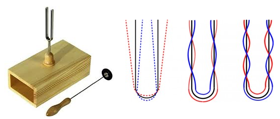
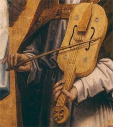
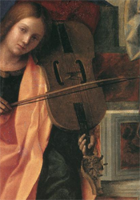
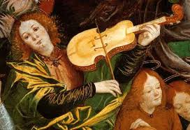

Tout instrument de musique naît de la rencontre d'un système oscillant et d'un système résonant. La classification raisonnée "Hornbostel-Sachs" (1914) range prioritairement les instruments en cinq catégories, en fonction de la nature du support physique qui vibre. Ce peut être :
Une plaque de métal : vibraphone, glockenspiel, etc) ou de bois (xylophone, etc) ou plus généralement un objet massif (triangle, cloche, etc) dont la vibration contamine directement l'air ambiant (Famille des idiophones),
Une membrane tendue sur un espace clos : tambour, timbales, etc (Famille des membranophones),
Un ensemble de cordes tendues par dessus une caisse de résonance : violon, piano, clavecin, etc (Famille des cordophones),
Une colonne d'air, prisonnière d'un conduit, orgue, flûte, clarinette, trompette, etc (Famille des aérophones),
Un circuit électrique oscillant alimentant des haut-parleurs : Thérémine, Ondes Martenot, etc (Famille des électrophones).
Il ne suffit pas qu'un organe de l'instrument vibre, il faut encore que cette vibration soit transmissible à l'air ambiant qui se chargera de la propager sous la forme d'une onde sonore. On décompose le processus en plusieurs temps :
Le geste initial appartient à l'interprète qui actionne le système oscillant (oscillateur) de son instrument de façon appropriée (En insufflant de l'air, en frappant une corde ou en la pinçant ou encore en exerçant une friction sur elle, etc). Si l'oscillateur était parfaitemnt élastique et affranchi de tout frottement, il continuerait de vibrer, sans amortissement, jusqu'à la fin des temps, et on entendrait aucun son puisque l'énergie mise en jeu demeurerait prisonnière de l'oscillateur. Ce n'est (heureusement !) pas réaliste car les frottements sont toujours présents, en particulier au contact de l'air, et cela nous arrange car ce que l'on veut, c'est entendre un son.
On rend l'instrument effectif en précipitant l'amortissement de la vibration initiale : un dispositif mécanique intervient, à ce stade, qui communique la vibration primitive à un volume d'air initialement emprisonné dans un espace dit de résonance (caisse, tuyau, etc). Il y correspond un transfert d'énergie, responsable de l'amortissement de l'oscillateur au bénéfice de l'air prisonnier. L'oscillateur ayant réintégré l'état de repos initial, il est prêt pour une nouvelle excitation donc une nouvelle note sans qu'il y ait de chevauchement parasite. L'air confiné transmet, à son tour, la vibration acquise à l'air ambiant avec lequel il communique par un système d'ouvertures (les ouïes).
L'air étant de nature élastique, la vibration des couches directement en contact avec les ouïes se transmet dès lors de proche en proche aux couches successives : une onde sonore prend naissance qui rayonne dans toutes les directions de l'espace environnant, à la vitesse approximative de 340 m/s, jusqu'à atteindre un auditeur éventuel.
L'espace résonant a pour mission d'amplifier le son, encore faut-il comprendre ce que cela signifie. L'expérience du diapason est éclairante à ce sujet (Référence : Physique à main levée, Université de Lille). Cet instrument idiophone est constitué de deux branches métalliques parallèles dessinant un U étroit et allongé et dont la base est prolongée par une mince tige pouvant s'enficher, si on le souhaite, dans l'orifice d'une caisse de résonance.

Vibration d'un diapason : le mode fondamental domine les (ici deux) modes secondaires
On se sert d'un marteau en caoutchouc pour le faire vibrer. La physique prédit et l'expérience vérifie que la vibration de cet objet est quasiment sinusoïdale à une fréquence, f, qui dépend de ses caractéristiques physiques (masse volumique, longueur, etc). La forme en U a pour conséquence que sa base ne vibre pas latéralement (on dit que c'est un noeud de vibration transversal) d'où on peut tenir l'instrument par la tige entre les doigts sans amortir notablement sa vibration. Le son entendu est pur mais fort peu mélodieux car étant quasiment privé d'harmonique, il s'en trouve complètement détimbré. Il est également peu intense car l'amortissement au contact de l'air est lent d'où l'onde sonore est peu alimentée en énergie.
Si l'on enfonce la tige dans la caisse de résonance adaptée (Sa longueur idéale, ℓ, vaut le quart de la longueur d'onde émise soit, ℓ = 85/f, 193 mm à 440 Hz), le son gagne en intensité : l'explication est que la tige (dont on a dit qu'elle ne vibrait pas transversalement) vibre cependant un peu longitudinalement, comme indiqué sur la figure, et que cela suffit pour mettre le dessus de la caisse, puis l'air qu'elle contient, en vibration à la même fréquence. Ce que le son gagne en intensité, il le perd évidemment en durée car l'énergie totale du système diapason+air doit être conservée.
Tout instrument de musique fonctionne sur ce principe d'un résonateur qui accélère l'amortissement de l'oscillateur. Si l'on y réfléchit de plus près, c'est double bénéfice : la note émise s'intensifie et elle s'écourte au profit de la note suivante. Avant de considérer l'exemple du violon à la lumière de ce qui vient d'être dit, distinguons :
Marimba
- Les instruments à sons fixes (piano, clavecin, marimba, etc) où le système oscillant est composé d'autant d'oscillateurs individuels qu'il y a de notes à produire. Le système résonant peut consister en un résonateur unique (caisse de résonance), c'est le cas du piano, ou en autant de résonateurs calibrés et couplés individuellement aux oscillateurs, c'est le cas du marimba. Dans cette éventualité, le résonateur est d'autant plus grand que la note à accorder est grave (donc que sa fréquence est basse).
Violon
- Les instruments à sons variables (violon, trombone à coulisse, thérémine, etc) où le nombre des oscillateurs est bien moindre que celui des notes à émettre. C'est alors la technique de l'instrumentiste qui compense ce manque par la position des doigts racourcissant la corde, par l'allongement de la coulisse, etc. Dans ce cas, un résonateur unique est commun à toutes les notes. On conçoit que cette contrainte pose des problèmes techniques difficiles aux facteurs du fait qu'il n'est nullement évident d'adapter a priori une caisse unique à toutes les notes, des plus graves aux plus aiguës.
Le "violon" médiéval
L'idée de tirer des sons d'un ensemble de cordes tendues remonte à l'Antiquité : Apollon ou Orphée, pour ne retenir que des exemples myth(olog)iques connus, pinçaient les cordes de leur lyre depuis l'Olympe ou les Enfers. L'idée de faire vibrer ces cordes par frottement au moyen d'un archet est plus récente et on en cherche généralement l'origine au Moyen-Orient. La formule a gagné l'Occident à la faveur des invasions mauresques, des échanges commerciaux et sans doute des Croisades et elle y a fait fortune au terme de 500 ans d'une recherche patiente.
On imaginerait volontiers que les progrès scientifiques qui ont caractérisé la Renaissance ne furent pas pour rien dans cette ascension vers le niveau de perfection acoustique que l'on sait mais les faits démentent cette supposition, d'ailleurs le violon a trouvé ses caractéristiques idéales à une époque (vers 1600) où l'acoustique physique n'était encore nulle part. C'est aux recherches empiriques d'artisans méticuleux que l'on doit la réponse idéale au problème posé de tirer le meilleur parti d'une corde et d'un archet. La Science n'est venue qu'après et elle a dû se contenter d'entériner une solution aboutie.
Cette chronique est un mélange d'histoire organologique et d'acoustique mathématique. Ces points de vue se complètent et se rejoignent évidemment mais le lecteur qui ne se sentirait à l'aise qu'avec un seul des aspects traités peut parfaitement ignorer l'autre en sautant les paragraphes qu'il jugerait trop techniques.
Rebec

Vièle

Lira da braccio
Le rebec est sans doute la forme occidentalisée du rebab arabe qui a accompagné les Maures, en Espagne, dès le 11ème siècle. Il s'est répandu en Europe occidentale vers 1100. Aucun instrument ne nous étant parvenu, nous n'en connaissons quelques caractéristiques qu'au travers de commentaires et d'illustrations figurant dans des manuscrits d'époque. Creusé dans la masse d'un seul bloc de bois, sa caisse présente la forme d'une demi-poire dont la face plane est percée de deux ouvertures en forme de C qui se regardent. Les cordes, en nombre variable de 2 à 4, sont en boyau, un progrès certain par rapport au modèle oriental qui utilisait des fils de soie.

Violon (Ferrari)
Le premier traité illustré d'organologie (Harmonice musices Odhecaton) est paru à Venise, en 1501, chez l'éditeur Ottavino Petrucci. Il détaille pour la première fois les nombreuses variantes instrumentales existantes, se différenciant, en particulier, par la taille (donc la tessiture) et par le port (Posé sur les cuisses, coincé entre les jambes, tenu en bandouillère sur la poitrine, posé sur la clavicule ou sur l'épaule). Le violon auquel nous pensons commence effectivement à se dessiner dans la peinture italienne du début du 16ème siècle mais il porte encore le nom de viola da braccio. Cette appellation réfère au mode de jeu de l'instrument, porté sur l'épaule par opposition à la viola da gamba qui se tenait entre les jambes. Le principe de l'instrument définitif est désormais acquis, il ne retera plus qu'à le mener en l'état de perfection.
Il importe de réaliser que les progrès qui ont été enregistrés entre 1500 et 1700 n'ont rien dû à la science. De science il ne pouvait être question : l'acoustique physique était inexistante à cette époque et le violon a été parfait bien avant que les scientifiques aient pu émettre un avis circonstancié à leur sujet. On sait aujourd'hui, grâce à des études comparatives menées sur des générations successives d'instruments (plus de 200 !) que chaque facteur a recopié les instruments antérieurs dans les limites de la précision de son savoir-faire. Un pourcent d'écart dans les mensurations n'était pas rare mais ces artisans eurent l'intelligence de comparer les performances des variantes obtenues jusqu'à ne garder que celles qui donnait la meilleure satisfaction. C'est par cette succession d'essais et d'rreurs que la génétique instrumentale a progressé jusqu'à produire des formes certes parfaites mais parfois étranges en tous les cas inattendues. Cela est tellement vrai qu'actuellement la science déductive demeure largement impuissante à expliquer pourquoi le violon possède cette forme particulière, pourquoi les ouïes sont telles que nous les connaissons, etc.
L'instrument mérite enfin le nom de violon au sens moderne du terme : il a acquis sa forme quasiment définitive d'où il ne subira plus que des améliorations mineures davantage destinées à en renforcer l'intensité du son que sa beauté.
Au-delà, l'instrument a certes continué d'évoluer en performance mais nullement en perfection. On considère en effet que l'état d'achèvement atteint par l'école de Crémone a frisé la perfection acoustique. Les perfectionnements ultérieurs n'ont concerné que la recherche d'une plus grande intensité sonore, réclamée par la fréquentation de salles de concerts de plus en plus grandes, et celle d'une plus grand stabilité de l'accordage, quelles que soient les conditions de température et d'hygrométrie de ces salles.
est (avec le piano) l'intrument-roi de la musique savante occidentale. Il est apparu en Occident, lors des premières invasions musulmanes, sous une forme primitive encore très éloignée de celle que nous connaissons aujourd'hui. Aucun instrument de ces époques lointaines soit pour faire simple antérieures à 1300 ???, ne nous est parvenu pas même en pièces détachées. Tout ce que nous en savons repose sur une iconographie imprécise ne permettant pas d'aller très loin dans la description des évolutions subies par l'instrument et encore moins de ses performances acoustiques. Ce que nous en dirons, pour vraisemblable qu'il paraisse, demeure donc sujet à débat. Le premier receuil qui nous soit d'une aide véritable date des années 1300, c'est mais il est clair que l'instrument a déjà subi maintes transformations.
L'autre extrémité de l'échelle du temps se situe à l'époque baroque aux plus beaux jours de l'école de Crémone. Les dates ne sont pas mentionnées par coquetterie, elles imposent d'emblée un ensemble de considérations auxquelles on ne s'attendrait pas forcément. En 1600, l'acoustique physique, au sens moderne du terme, n'était encore nulle part. Il est donc parfaitement vain de tenter de justifier l'état de perfection de l'instrument par la mise en pratique, par ses constructeurs, de règles inconnues que la physique n'a dégagées que bien plus tard. Il n'y a qu'une seule explication possible : les luthiers de cette époque ont travaillé à l'intuition, guidés par un ensemble d'essais et d'erreurs corrigées jusqu'à ce que le résultat ne puisse plus être amélioré de cette façon. Le plus étonnant est que la science n'ajoutera rien de plus : elle se conentera d'observer l'instrument parfait en l'état sans être en mesure d'expliquer les raisons de la facture idéale trouvée ni de proposer la moindre amélioration.
Le violon en cet état idéal pose pourtant toutes sortes de questions à un observateur naïf auxquelles cette modeste chronique tente de répondre.
Violon : principe du fonctionnement et glossaire
1. Théorie de la corde vibrante idéale
Les instruments de la famille des cordophones fonctionnent tous sur le principe de la vibration d'une corde tendue entre deux extrémités fixes. Ce qui change éventuellement, de l'un à l'autre, c'est le mode de sollicitation de la corde, pincement (harpe, guitare, luth, clavecin, etc), frappement (piano, etc) ou frottement avec un archet (violon, alto, violoncelle, viole, etc).
Si l'on perturbe l'état d'une corde tendue entre ses extrémités fixes, par exemple en la pinçant, elle se déforme. Une fois relâchée, elle tente de revenir à sa position initiale mais elle n'y parvient pas immédiatement. Au contraire, elle se met à osciller de part et d'autre de cette position de repos avec une fréquence qui dépend de plusieurs facteurs physiques : sa longueur, L, sa masse par unité de longueur, μ, et la tension qui y règne, T. Si la corde est parfaitement élastique, cette fréquence vaut :
En l'absence de frottement, la corde oscillerait éternellement. L'étude mathématique de ce cas idéal est un sujet d'étude classique. Elle repose sur l'équation des ondes, ∂tty(x,t) = (T/μ) ∂xxy(x,t), dont la solution générale s'exprime comme une série de Fourier :
Corde pincée
Dans cette série, les coefficients An et Bn se calculent en fonction de la déformation initiale imposée à la corde. Dans le cas particulier où la corde est pincée "en dent de scie" à une distance ℓ de son extrémité (imposant un déplacement y(ℓ, 0) = h), cette solution s'écrit simplement :
Si vous êtes allergique à toute forme de calcul, vous pouvez sauter ce paragraphe sans dommage pour la compréhension, sinon vous pouvez à tout le moins vérifier que cette solution répond à la question posée :
L'équation des ondes est vérifiée à condition de poser que la vitesse de propagation de l'onde le long de la corde vérifie la relation c2 = T/μ.
Les conditions initiales vérifient qu'à l'instant t=0, la corde est bien déformée en dent de scie : y(x,0)=-hx/a si 0≤x≤ℓ et y(x,0)=-h(L-x)/(L-ℓ) si ℓ≤x≤L et qu'elle est immobile, ∂ty(x,t)|t=0 = 0.
Les conditions aux limites y(0,t)=y(L,t)=0 le sont tout autant signifiant que la corde est fixe aux extrémités.
La solution trouvée est périodique, de période, τ=2L/c, ou ce qui revient au même de fréquence, f0=c/(2L), comme annoncé plus haut. Les figures suivantes illustrent le comportement totalement idéal d'une corde pincée aux deux tiers de sa longueur ne subissant aucun amortissement (On a exagéré fortement la dent de scie pour plus de lisibilité; en pratique, l'ordonnée, h, de son sommet est bien moindre). Les figures se lisent dans l'ordre normal, de gauche à droite sur chaque ligne, représentant l'état de la corde tous les vingtièmes de période. Au terme d'un cycle complet (21ème figure), la corde reprend sa position de départ et l'oscillation recommence.
Déformation progressive d'une corde pincée pendant une période complète
Cette analyse de Fourier suggère les remarques importantes suivantes :
L'oscillation se présente comme la superposition d'une infinité d'oscillations individuelles sinusoïdales de périodes, nτ = n 2L/c (n= 1, 2, 3, etc). Le premier terme est dit fondamental et les suivants sont dits harmoniques (En pratique, l'usage autorise de parler d'harmoniques de rang n, y compris pour le fondamental qui occupe alors le rang 1). Même si vous avez ignoré les calculs, vous devez comprendre que c'est la déformation initiale qui détermine les valeurs numériques des coefficients de la solution de Fourier. Or ces coefficients sont importants car ils déterminent l'amplitude des sons harmoniques donc la richesse du timbre que l'instrument peut développer sur cette base.
Vibration stationnaire
C'est parce que la déformation initiale est non sinusoïdale que les harmoniques sont présents. Si la corde avait été perturbée initialement en dessinant une arche complète de sinusoïde, entre les extrémités fixes, correspondant précisément au fondamental, elle aurait conservé éternellement cette allure sans faire apparaître le moindre son harmonique. En clair, elle aurait oscillé de façon stationnaire, comme indiqué sur la figure ci-contre, proposant un son complètement détimbré. Ce cas de figure ne se produit heureusement jamais, en pratique, puisqu'il n'est pas envisageable de déformer la corde de cette façon rien qu'avec les doigts.
Revenant au cas plus réaliste de la déformation en dent de scie, on constate que la position de cette dent (la valeur de ℓ) influe sur le spectre des harmoniques à cause du facteur, sin(nπℓ/L). En particulier, ce ne serait pas une bonne idée d'exciter la corde en son milieu, ℓ=L/2, car cela aurait pour conséquence d'éteindre les harmoniques de rangs pairs donc un appauvrissement du timbre. En fait, l'exciter au tiers de sa longueur ne ferait guère mieux puisque, cette fois, ce seraient les harmoniques de rangs multiples de 3 qui seraient éteints. L'idéal est donc d'éviter de solliciter la corde en des points tels que le rapport, ℓ/L, est une fraction simple. Bien sûr aucun violoniste ne se préoccupe de calculs aussi savants, il sait par expérience où la corde doit être attaquée.
Il est utile, à ce stade, de s'intéresser au bilan énergétique de la corde (idéale) vibrante. L'absence présumée de frottement a pour conséquence de garantir la conservation de l'énergie dans la corde à tout instant : à l'instant initial, la corde est déformée (par l'instrumentiste qui a dépensé une énergie pour cela) d'où elle est porteuse d'une énergie potentielle, U0. Par contre elle est immobile à cet instant donc elle ne possède aucune énergie cinétique (K0=0). Lorsque la corde entre en oscillation, elle se détend, convertissant progressivement son énergie potentielle en énergie cinétique et inversement une demi période plus tard. L'essentiel est de comprendre qu'on a, à tout instant : U+K=constante (=U0). L'équation de conservation associée à l'équation d'onde se note dans le cas général :
On peut préciser les valeurs de chaque terme dans le cas particulier de la corde pincée en dent de scie, il suffit d'utiliser la formule trouvée pour y(x,t) dans ce cas. Contentons-nous de mentionner l'énergie mise en jeu par l'interprète lors de la déformation initiale, soit, tous calculs faits :
Energie dépensée en fonction du point d'attaque
Cette relation nous enseigne que pour une hauteur de dent de scie donnée, h, l'énergie dépensée est minimale lorsque la corde est attaquée en son milieu. En pratique, on préfère attaquer la corde près du chevalet, ce qui coûte davantage d'énergie mais qui procure aussi un son plus puissant.
Ces résultats cessent d'être valables lorsque les frottements entrent en action afin de donner naissance à l'onde sonore. Ils suffisent cependant pour fixer quelques ordres de grandeur.
La figure ci-dessus représente une vue éclatée d'un violon moderne et précise le vocabulaire. Celui-ci n'a pas varié depuis les travaux de l'école de Crémone (Stradivarius, Guarnerius, Amati, etc). Insistons sur le rôle essentiel de quelques organes particuliers :
Le chevalet est important car c'est lui qui assure la transmission de la vibration des cordes vers la table d'harmonie. Il exerce une pression non négligeable sur la table d'harmonie qui lui vient de la composante orthogonale (à la table d'harmonie) de la tension résultante des 4 cordes.
L'âme est une pièce en bois cylindrique qui relie les deux faces principales de la caisse de résonance, la table d'harmonie et le fond. Elle assure principalement la transmission de la vibration de la première vers la seconde et elle renforce accessoirement la soliditié de la caisse qui sans elle menacerait d'imploser sous l'effet de pression du chevalet.
La barre d'harmonie est une tige en bois collée sur la face intérieure de la table d'harmonie, dans le sens longitudinal, qui favorise la transmission de la vibration vers l'air prisonnier de la caisse. https://palomavaleva.com/la-physique-et-le-violon-notions-elementaires/
Bien que ces éléments caractérisant l'instrument violon aient été présents dès le 16ème siècle, le nom violon n'apparaissait pas encore systématiquement à l'époque de Monteverdi. Il a fallu attendre le baroque plus tardif pour que cela devienne le cas chez Tartini ou Locatelli. L'instrument crémonais n'a pas connu immédiatement la vogue actuelle. Il a d'ailleurs subi un certain nombre de modifications destinées à en renforcer le son.